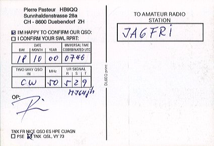

[Back Issues Jun.2011]
TIME:UTC(JST-09:00)
Report from JA1RJU(PM95sq)
30.Jun.2011(15:00c)
BV2YA/b 10:20- 50.001 CW Beacon
DU1EV/B 10:20- 50.008 CW Beacon
JR6YAG/b 10:20- 50.037 CW Beacon Okinawa
DU1EV 10:32 50.106 CW
BH7OXR 10:46 50.110 SSB
EX9T 11:05 50.098 CW
EX9T 11:45 50.098 CW
4X4DK 13:56 50.091 CW JA6(H)
SV1DH 14:15 50.102 CW JA6(H)
Report from JA1RJU(PM95sq)
29.Jun.2011(15:00c)
BD7NWF 00:14 50.101 CW CQ
BA5DX 02:19 50.105 CW
-----------------------------------------------
SV8DTD 09:18 50.120 SSB JA6
SV8RX 09:53 50.115 SSB JA6
SV9CVY 10:03 50.165 SSB JA6
YO3DDZ 10:33 50.130 SSB JA6
SV1JMO 10:52 50.083 CW JA6
SV1DH 10:56 50.102 CW JA6
EX9T 14:13 50.086 CW JA6
Report from JA1RJU(PM95sq)
28.Jun.2011(15:00c)
DK1MAX 05:40 50.098 CW
S59A 06:05 50.096 CW
LZ2CC 06:49 50.085 CW
DK3WG 07:00 50.089 CW
LY2SA 07:20 50.082 CW
UN8GC 07:36 50.108 CW
OZ3ZW 07:46 50.103 CW
DK1MAX 07:50 50.098 CW @
(4L1AN 07:58 50.096 CW QRV)
OZ8ADE 08:15 50.083 CW
OK1DO 08:23 50.082 CW
(CT1HZE 08:24 50.079 CW QRV)
PA7M 08:28 50.108 CW
(E70T 08:34 50.084 CW QRV)
DK3WG 08:41 50.080 CW
4U1ITU 09:02 50.098 CW (H) into JA1(QM06)
BA4SI 09:20 50.097 CW CQ
LZ1QI 10:44 50.082 CW
LZ1QI 11:12 50.082 CW JA6
UR0MC 11:21 50.105 CW JA6
LZ2CC 11:21 50.084 CW JA6
LZ2WO 11:49 50.081 CW JA6
UR6IDX 11:52 50.100 CW JA6
IT9VDQ 12:06 50.089 CW JA6
BA4SI 12:08 50.097 CW CQ EU
VR2UW 12:11 50.090 CW
SV8DTD 12:13 50.118 SSB JA6
-------------- REPORT FROM DXSCAPE ------------------
UR3IFD 1226Z 50108.0 CW JA5
SV8DTD 1232Z 50120.0 SSB JA6
9H1XT 1233Z 50086.0 CW JA6
SV8DTD 1234Z 50115.0 SSB JA4
SV8DTD 1240Z 50115.0 SSB JA6
IT9RZR 1243Z 50091.0 CW JA6
SV8DTD 1259Z 50132.0 CW JA6
LZ2WO 1451Z 50085.8 CW JA6
SV1DH 1502Z 50102.0 CW JA6
YT1AR 1510Z 50079.0 CW JA3(H)
LZ2WO 1512Z 50085.7 CW JA3(H)
LZ2WO 1533Z 50085.9 CW JA2(H)
EX8MJ 1555Z 50080.7 CW JA0
-----------------------------------------------------
Report from JA1RJU(PM95sq)
27.Jun.2011(15:00d)
W5KI 22:03 50.085 CW
K0YW 22:25 50.085 CW
W6XI 22:31 50.085 CW
WA7JTM 22:37 50.085 CW
N5JEH 23:06 50.090 CW
W6XI 23:10 50.089 CW
N2IC 23:34 50.090 CW
JT1BV 23:46 50.085 CW
BA4SI 23:56 50.105 CW CQ NA
BA5DX 01:24 50.105 CW
ER1LW 04:43 50.100 CW CQ
LZ2DF 07:00 50.082 CW
LZ2QI 07:09 50.086 CW
UN8GC 07:17 50.101 CW
SM4DHF 07:29 50.089 CW
VU2RBI 07:45 50.102 CW
LA8HGA 08:08 50.085 CW
TA7X 08:14 50.126 SSB
LZ2DF 08:28 50.082 CW
IT9RZR 09:08 50.090 CW @
9H2PA 09:33 50.105 CW JA6
HL0NHQ 09:39 50.109 CW
9H1PA 09:40 50.105 CW
HL1VAU 09:44 50.097 CW
CT1HZE 09:45 50.082 CW
JT1BV 09:52 50.085 CW
LZ1QI 09:57 50.087 CW JA6
SM4DHF 10:00 50.081 CW JA6
JT1BV 10:08 50.100 CW
CT1HZE 10:10 50.082 CW JA6
UR5MW 10:13 50.100 CW
SM4EMO 10:14 50.086 CW JA6
UR6IDX 10:20 50.100 CW JA6
UK8OM 12:49 50.100 CW
BD3NHK 13:59 50.100 CW
--------------- REPORT FROM DXSCAPE -------------
SV9GPJ 1502Z 50103.0 539 CW JA3
UT8IO 1533Z 50100.0 579 CW JA1
UT8IO 1533Z 50099.0 599++ CW JA3
SV1DH 1540Z 50088.0 579 CW JA3
SV1DH 1540Z 50090.8 CQ CW JA3(H)
UT8IO 1543Z 50100.0 CW JA0
UT8IO 1557Z 50100.0 CQ CW JA6
SV5BYR 1557Z 50099.0 FB sig CW JA2
TA2ZAF 1558Z 50080.0 CW JA3
TA2ZAF 1607Z 50078.9 CQ JA CW JA3
YU2MMA 1619Z 50085.0 CQ JA CW JA2
TA2DA 1630Z 50099.5 CQ CW JA2
LZ2WO 1634Z 50098.4 CW JA3
YT1VP 1635Z 50084.0 CW JA2
YT1VP 1637Z 50084.0 CQ CW JA4
ER1LW 1641Z 50092.0 CQ CW JA2(H)
TA2DA 1642Z 50099.5 559 CW JA2
ER1LW 1645Z 50092.0 CW JA2
TA2AD 1659Z 50099.5 559 CW JA2
TA2AD 1700Z 50099.5 559 CW JA2
TA2AD 1716Z 50099.5 539 CW JA2
-----------------------------------------------------
早朝の北米のオープンは昨日に引き続きW2など東海岸まで入感したが、規模は狭い範囲。入感エリアはW5からW6/7など中西部が中心だった。
午後からオープンしたヨーロッパ方面は、西日本への伝搬が主で、1エリアで入感する局は少ないものだった。昨日入感したインドのVU2RBIも入感していたが、信号は前日とは比較にならないほど弱く、短時間でフェードアウトした。
コンデションは夕方になっても相変わらず西日本中心の入感で、JA6ではモービルでもQSO出来るほどだったとの事。1900時前後から入感エリアは、地中海沿岸からCT、EAなど南ヨーロッパへと広がった。リポートだけ見ると、12,000Km近い伝搬で"大オープン"の様相だが、日本への入感エリアは狭く、西日本に限定されたオープンだった。
|
Report from JA1RJU(PM95sq)
26.Jun.2011(15:00d)
K1TOL 22:09 50.050 CW
W7XU 22:10 50.087 CW
W1JJ 22:34 50.080 CW
W1JR 22:34 50.051 CW
K0HA 22:50 50.083 CW
K2ZD 22:50 50.049 CW
K4PI 23:22 50.088 CW
NN4O 23:30 50.085 CW
---------------------------------------
K4PI 23:22 50.088 CW
VR2XMT 01:56 50.115 SSB
RN0JJ 01:58 50.120 SSB
JT1BV 02:30 50.085 CW
UN8GC 03:30 50.113 CW
UN7QX 03:31 50.102 CW
BD7NWF 05:24 50.102 CW CQ
BD2SH/7 07:34 50.102 CW
LZ2WO 07:31 50.083 CW JA6
SP6GZZ 07:34 50.083 CW JA6
UK8OM 11:50 50.100 CW
Report from JA1RJU(PM95sq)
25.Jun.2011(15:00d)
VR2HF 01:01 50.097 CW CQ
BA4SI 01:03 50.085 CW CQ
DU7/PA0HIP 02:12 50.109 CW
BV100 02:25 50.115 SSB
BX100 02:57 50.107 CW @
UN8GC 03:09 50.100 CW @ CQ UP RST599 QRT=03:34z)
BD2SH/7 03:16 50.103 CW
UK8OM 05:02 50.102 CW @ UP RST579
XV1X 05:30 50.098 CW
HL2KV 05:30 50.098 CW calling XV1X
UK8OM 05:35 50.102 CW still good!
BA4SI 05:37 50.081 CW CQ EU
BD7NWF 05:59 50.105 CW
BD2SH/7 06:07 50.103 CW
UK8OM 05:08 50.102 CW CQ HL/JA
VR2UW 06:33 50.090 CW CQ
UK8OM 06:40 50.102 CW CQ JA
VR2XMT 06:52 50.135 SSB CQ DX
BD7NWF 07:00 50.100 CW CQ
OE4VIE 08:00 50.100 CW
UR5MW 08:20 50.085 CW @ RST599
VU2RBI 08:32 50.102 CW RST599! (YL OP)
UR5MW 08:50 50.085 CW still good!
BG4NMT 09:35 50.097 CW
UR3EZ 09:38 50.084 CW
VU2RBI 09:47 50.102 CW @ RST599!
HL2UVH 09:54 50.097 CW
4X4DK 10:00 50.101 CW
ER1LW 10:06 50.090 CW @
UN8GC 10:20 50.107 CW UP1
A45XR 10:39 50.106 CW @ UP1
LY2BAW 10:48 50.103 CW
TA2ZAF 10:58 50.086 CW
JT1BV 13:01 50.085 CW CQ
期待はずれに終わるかと思われた「夏至」前後の6mのコンデションだったが、今日は午後から突然の本格的なオープンで賑わった。昼ごろには早くもUN8GCが強力に入感、30分ほどJAとQSOした後、一時QRTしたが、入れ替わる様UK8OMが入感、JAのパイルをさばいていた。
1500時過ぎになってコンデションは一旦、落ちたが、1700時T頃から再び4X4、OE4、UR5、ERなどが聞こえだし、地中海沿岸からヨーロッパ中部へとコンデションは広がった。
このオープンと並行して入感してきたインドのVU2RBIは、JA'sの猛パイルとなったが、スピードの遅いCWの運用だったためQSOは大混乱となった。QSOの最後に"88"を送っていたことから、YLのOPの運用だった模様だが、信号は強力だったので、慣れたOPの運用なら多くの局がQSO出来たと思われる。のんびりとしたCWのQSOは、"殺伐"となるDXのパイルには場違いの"ご愛嬌"の、今季初のVUからの入感だった。
コンデションは時間と共にヨーロッパ中・東部のLY2、YL、ER、OHから、中近東のA45XR、4X4DK、SV8DH、西アジアのTA2ZAF、UN8GC、UR3/5、JT1BVなど、久しぶりに長時間の広範囲なオープンで賑わった。
|
Report from JA1RJU(PM95sq)
24.Jun.2011(15:00c)
BV100 23:40 50.100 CW
BU2AW 23:44 50.115 SSB
---------------------------------------
SV1DH 06:58 50.103 CW CQ
SV1DH 07:37 50.103 CW CQ
LZ2DF 08:04 50.083 CW @ RST599/599
LZ2WO 08:09 50.090 CW
LZ2DF 08:43 50.083 CW still RST599
RN0JJ 08:59 50.120 SSB
LZ2WO 09:11 50.086 CW @ RST579/559
TA2ZAF 09:47 50.0858 CW into JA4-6 (Nil in JA1)
LZ2WO 09:48 50.085 CW into JA1 (QRM with TA2ZAF!)
今年の「夏至(6月22日)」前後のコンデションは全くの期待はずれで、朝の北米方面は落ち込んだまま。午後のヨーロッパ方面も、5月末に単発での入感があったものの、6月に入ってからスポット的に入感するだけで、こちらも期待はずれだった。こんな中、今日は久しぶりに"強いヨーロッパ"の信号が入感した。
オープンしたと言っても、SV1DHの入感から始まったコンデションは不安定で、QSBの激しい信号だった。このSV1DHの入感の後に東日本で聞こえ出したのは、LZ1/LZ2(ブルガリア)で、特に強く入感していたLZ2DFにはJA'sのパイルが続いていた。信号は上昇してきたものの、こちらも相変わらずQSBは激しくバズの合間に聞こえる信号は不安定だった。
オープンは2時間ほどだったが、後半になって西日本でTA2ZAFが入感してQSO出来た。東日本ではTA2ZAFの信号は確認できなかったためワッチするだけだったが、ほとんど同じ周波数でCQを出してきたLZ2WOが、東日本ではよく聞こえていたため、TA2ZAFを呼ぶ西日本とLZ2WOを呼ぶ東日本の局が一時重なってQRMになると言った状態だった。
夜間に西日本でQSOしているヨーロッパの信号(YT、UT)は東日本では入感がなかった。中近東からアクティブに出ていたバーレンのA92IOは、2週間の予定で本国(アイルランド=EI3IO)に帰国するため6/23日に一時QRTした。
|
Report from JA1RJU(QM06cb)
23.Jun.2011(15:00c)
DU1EV/B 00:25- 50.008 CW Beacon
DU1/JJ5GMJ 00:06 50.100 CW
XV1X 04:06 50.110 CW
BA4SI 04:52 50.102 CW CQ
JD1BMG/JD1 05:57 50.200 SSB Haha Jima
DU7/PA0HIP 09:11 50.125 CW
DU7/PA0HIP 09:22 50.105 CW CQ EU
Report from JA1RJU(QM06cb)
22.Jun.2011(15:00c)
BV2YA/b 03:50- 50.001 CW Beacon
(JR6YAG/b 03:50 50.037 CW Beacon Okinawa RST599)
BD7NWF 04:00 50.101 CW CQ
XV1X 04:00 50.099 CW CQ
BA4SI 05:20 50.101 CW CQ EU
Report from JA1RJU(QM06cb)
21.Jun.2011(15:00c)
BD7NWF 05:56 50.097 CW CQ
XV1X 06:25 50.099 CW CQ
BG5CIC 06:55 50.110 SSB
XV1X 07:00 50.127 SSB
BA5AN 07:16 50.097 CW
BD7NWF 07:56 50.102 CW CQ
BV2YA/b 08:15- 50.001 CW Beacon
DU1EV/B 08:15- 50.008 CW Beacon
HL4CEL 08:30 50.105 CW
BD2SH/7 08:35 50.113 CW
XV1X 08:35 50.099 CW
BD5CAM 08:54 50.110 SSB
XV1X 09:05 50.115 SSB
BA4SI 09:29 50.090 CW CQ
XV1X 10:52 50.099 CW CQ
Report from JA1RJU(PM95sq)
20.Jun.2011(15:00c)
BG5CIC 07:50 50.115 SSB CQ
BA4SI 07:52 50.105 CW CQ DX
KH7Y 08:00 50.105 CW @ CQ CQ RST599
KH7Y 08:37 50.105 SSB 08:47z QRT
6月22日は、一年で昼の長さがもっとも長い「夏至の日」。東京では、日の出が午前4時24分ごろ、日の入りが午後7時1分ごろで、昼の長さは、14時間37分くらい。
夏至の前後はマルチホップにより北米やヨーロッパのDX伝搬が盛んになるはずなのだが、今年は夏至前のDXの入感は全く期待ハズレに終わっている。これからにコンデション上昇に期待したいもの。
|
Report from JA1RJU(PM95sq)
19.Jun.2011(15:00c)
DU1EV/B 01:15- 50.008 CW Beacon
VR2XMT 02:22 50.115 SSB CQ DX
VR2UW 02:30 50.102 CW
BD7NWF 02:31 50.105 CW @
BA4SI 05:14 50.107 CW
9K2YM 08:28 50.095 CW JA6
BA4SI 08:56 50.103 CW
9K2YM 10:30 50.087 CW CQ into JA6
Report from JA1RJU(PM95sq)
18.Jun.2011(15:00b)
No DX information in PM95sq
BV5UA 05:58 50.110 SSB JA6
BG5QIK 06:08 50.110 SSB ↓
BD5QDM/5 06:13 50.110 SSB
BH7OXR 07:15 50.110 SSB
BH7OZG 07:21 50.105 SSB
BG6AHU 09:17 50.120 SSB
Report from JA1RJU(PM95sq)
17.Jun.2011(15:00c)
DU1EV/B 01:30 50.008 CW Beacon RST599+
9M6XRO 02:40 50.110 SSB CQ (QSL via M0URX)
KH7Y 06:03 50.105 CW @ CQ RST599
KH7Y 06:55 50.105 CW still good!
KH7Y 06:56 50.105 SSB
KH7Y 07:04 50.105 CW CQ again →QRT=07:20z
A92IO 09:03 50.106 CW JA6 RST599-529
Report from JA1RJU(PM95sq)
16.Jun.2011(15:00b)
◎台湾(BV)の事情に詳しいJA3AQM・佐々木光四郎さんからの情報に寄ると、去る6月10日付けで台湾NCCからHF帯を含む新しい周波数の割り当てが発表され、これにより台湾の50MHz帯の使用区分が50.000-50.150MHzに拡張されたとのこと。
従来の台湾の6mバンドは50.000-50.0125MHzと50.110-50.122.5MHzの範囲に限られており、SSBでの運用周波数はかなり狭いものだった。今回の変更により、50.000-50.150MHzが正式に使える様になり、50.110-115MHz付近に集中していた台湾のSSB局は、今後はかなり余裕のある幅での運用が出来るようになった。
また、最近6mで良く聞かれる様になった「BM2***」のコールサインは台湾の4級局が3級に変更になり、HF帯には出られないものの、6mのSSBの運用がOKとなりQRVを開始しました。
50.001MHzに出ていたビーコン局・BV2YA/Bは、現在管理人が訪米中で6月末頃まで停波しています。新しい運用地は台北市内のマンション屋上から運用予定とのこと。
 
BV100を運用するJA3AQM・佐々木さん/BV100のメンバーと(TNX JA3AQM)
|
Report from JA1RJU(PM95sq)
15.Jun.2011(15:00c)
HL0NHQ 07:25 50.105 CW CQ
RN0JJ 10:30 50.120 SSB
Report from JA1RJU(PM95sq)
14.Jun.2011(15:00c)
K0DU 00:50 50.098 CW
K0DU 01:01 50.098 CW @ RST579/579
K0JY 01:09 50.094 CW
N5DG 01:10 50.094 CW
W7OUU 01:09 50.088 CW
◎夏のEsシーズンにも入感していたスイスのアクティブ局・HB9QQ(Pierre)の訃報が6/14日に伝えられた。スイス本国とQSOしていない局も、インド洋のモルディブ島からQRVした8Q7QQとQSOされた局は多いはず。今年もEsシーズンでの活躍を期待していた矢先の"サイレントキー"の報は残念なこと。Pierreのご冥福をお祈りします。
  
モルディブからも8Q7QQでQRVしていたHB9QQ・Pierre。
QSLは2000年10月の運用。
(It is with great sadness that we announce the passing of Pierre Pasteur, HB9QQ
who passed away on 13th June.)
|
|
Report from JA1RJU(PM95sq)
13.Jun.2011(15:00c)
DS2MEV 01:30 50.104 CW CQ
BA8AG 01:32 50.101 CW CQ
HL5FKP 02:08 50.140 SSB CQ
Report from JA1RJU(PM95sq)
12.Jun.2011(15:00c)
KH7Y 22:28 50.105 CW
W9DR 22:48 50.0855 CW
K4RX 22:58 50.0855 CW
NW0W 23:28 50.082 CW
N5DG 23:59 50.098 CW
--------------------------------------
NW0W 00:02 50.082 CW again
WZ8D 00:03 50.076 CW JA0
K4PI 00:38 50.099 CW
RN0JJ 04:35 50.120 SSB CQ RS59!
昨日の早朝に入感したKH7Yは、今朝も短時間ながら聞こえていた。直後に早朝の北米が入感、午後からはヨーロッパ方面の入感と、今季初めての両方向のパスがあった...。と、言ってもオープンしたのはごく限られた地域と局だけ。
北米本面のオープンは6月5日以来だが、早朝の本格的なオープンは今季初めて。北米方面の入感エリアはW8、9、0の中部からW4、5の南部の一部。JAの信号はTI5XP(コスタリカ)からも1エリアの信号が初めてリポートされている。
午後のヨーロッパ方面はSM4、LZ2、GM、9Hなどが確認されているが信号も弱く、首都圏ではほとんど確認出来なかった。ロシア東部(PN49)のRN0JJのSSBは今日も強力に入感していた。
|
Report from JA1RJU(PM95sq)
11.Jun.2011(15:00b)
KH7Y 00:10 50.105 CW
Report from JA1RJU(PM95sq)
10.Jun.2011(15:00b)
BG5CIC 09:27 50.115 SSB CQ
BV1EK 09:30 50.114 SSB CQ
Report from JA1RJU(PM95sq)
09.Jun.2011(15:00b)
Report from JA1RJU(PM95sq)
08.Jun.2011(15:00c)
BV100 01:05 50.115 SSB
DU1EV/B 02:45 50.008 CW Beacon
XV1X 04:00 50.098 CW CQ UP1
BD9BU 11:00 50.110 SSB JA6
BD9AKF 11:07 50.110 SSB JA6
Report from JA1RJU(PM95sq)
07.Jun.2011(15:00b)
DU7/PA0HIP 00:49 50.104 CW CQ
VR2UW 01:41 50.102 CW
BX2AB 01:44 50.107 CW
BV100 01:46 50.117 SSB
XV1X 02:00 50.098 CW
DU7/PA0HIP 02:10 50.100 CW CQ
(8N650HAM 02:45 50.104 CW CQ)
BX4AA 02:54 50.098 CW @
JI1FGX/DU9 03:06 50.110 SSB CQ Mindanao Is.
N7ET/DU7 03:12 50.105 CW CQ
XV1X 03:50 50.098 RTTY RST599
DU1/JJ5GMJ 03:59 50.096 CW CQ
DU1EV/B 03:59 50.008 CW Beacon
DU7/PA0HIP 04:05 50.100 CW CQ NA
9M6XRO 05:40 50.096 RTTY
BG5CIC 06:59 50.110 SSB CQ
Report from JA1RJU(PM95sq)
06.Jun.2011(15:00d)
KH2/JF2CRP 00:45 50.115 CW CQ
BD9BU 03:17 50.106 CW CQ
VR2XMT 04:09 50.112 SSB CQ
BA4SI 04:24 50.098 CW
VR2HF 06:01 50.103 CW
BV1EK 06:04 50.103 CW
BA5AN 06:10 50.107 CW @
BV1EK 06:28 50.123 CW
XV1X 07:13 50.190 SSB UP5
VR2PX 07:18 50.195 SSB calling XV1X
BD7OH 07:22 50.145 SSB
VR2UEU 07:24 50.130 SSB @ Umemura (QSL via JH9RUI)
VR2XMT 07:32 50.115 SSB
BU2AW 07:36 50.107 CW
XV1X 07:38 50.110/098 CW CQ
VR2UW 07:39 50.105 CW
BV4VR 07:39 50.102 CW
VR2CD 07:44 50.095 CW
BU2AW 07:49 50.125 SSB
9M2TO 07:52 50.115 CW RST599!
BV100 08:02 50.120/115 SSB CQ
9M2TO 08:05 50.115 SSB RS59
BU2AW 08:44 50.115 SSB CQ
Report from JA1RJU(PM95sq)
05.Jun.2011(15:00c)
BD4CZX 02:13 50.110 SSB CQ
NL7Z 05:39 50.105 CW
BA4TB 05:41 50.107 CW
BA4SI 05:50 50.100 SSB
NL7Z 06:13 50.105 @ CW RST599
KE7V 06:19 50.098 @ CW
VE7XF 06:28 50.096 @ CW
W7FI 06:33 50.094 CW
NL7Z 06:55 50.105 CW UP2
KE7V 06:57 50.0983 CW
VE7SL 07:18 50.104 CW
KL7/N6SPP 07:30 50.098 CW
NL7Z 07:30 50.130 SSB UP5-10
NL7Z 08:10 50.130 SSB still good ! (08:20 F.out)
午後から今季初の"本格的"な北米のマルチホップの入感があった。05:35z頃から関東の東部付近(QM06)から入感し始めたアラスカのNL7Zの信号は、時間と共に入感エリアは広がり、ピークでは都心部でもRST599まで上昇、SSBにQSYした07:30z頃でもRS59で安定に入感していた。オープンしていたエリアは東北以西の東日本を中心に、
西はJA3エリア付近までで、北海道ではW7の入感は無く、W6と1局QSO出来だだけ。NL7Zは今日のオープンで266局のJAとQSOしたとの事。
NL7Zの入感に続いてオープンした北米西海岸は、お馴染みのKE7V、W7FIなどと共にカナダ西海岸のVE7XF、VE7ADY、VE7SLなどが休日のJA'sのパイルを受けていた。
|
Report from JA1RJU(PM95sq)
04.Jun.2011(15:00a)
FEDXP Meeting (Miura-City,Kanagawa)
Report from JA1RJU(PM95sq)
03.Jun.2011(15:00b)
BG5CIC 09:50 50.115 SSB CQ
Report from JA1RJU(PM95sq)
02.Jun.2011(15:00b)
No DX information
Report from JA1RJU(PM95sq)
01.Jun.2011(15:00b)
No DX information